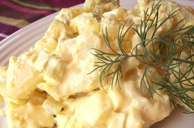

Old Fashioned Potato Salad

Description
This is potato salad the old-fashioned
way, with eggs, celery and relish.
It's really good to serve with chili.
Ingredients (recipe yields 8 servings)
- 5 potatoes
- 3 eggs
- 1 cups chopped celery
- ½ cup chopped onion
- ½ cup sweet pickle relish
- ¼ teaspoon garlic salt
- ¼ teaspoon celery salt
- 1 tablespoon prepared mustard
- ground black pepper to taste
- ¼ cup mayonnaise
Steps
-
Bring a large pot of salted water to
a boil. Add potatoes and cook until
tender but still firm, about 15
minutes. Drain, cool, peel and
chop.
-
Place eggs in a saucepan and cover
with cold water. Bring water to a
boil; cover, remove from heat, and
let eggs stand in hot water for 10
to 12 minutes. Remove from hot water,
cool, peel and chop.
-
In a large bowl, combine the potatoes,
eggs, celery, onion, relish, garlic
salt, celery salt, mustard, pepper and
mayonnaise. Mix together well and
refrigerate until chilled.